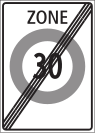
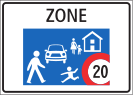
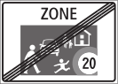

Zone 30
Начало

Конец

Warning
Инструкторы любят молчать и наблюдать, что ты будешь делать. Если он молчит, а спереди дорога имеет изгиб, висит знак тупик или запрет автотранспорта - необходимо сказать и свернуть. Также если висит знак оранжевая стрелка - туда также не следует ехать.
Люди переходить дорогу могут, когда нет машин. Пропускать специально водители не должны. Авто имеет преимущество. При объезде препятствий показывается только один поворотник влево.(включая стоячие машины) В Зоне 30 много равнозначных перекрестков без знаков приоритета. Иногда имеется разметка полос, но не всегда. Действует помеха справа. При подъезде к такому перекрестку необходимо сбросить скорость и смотреть в зеркала и в окно, что справа никого нет. Часто бывают неочевидные ответвления враво с приоритетом по помехе справа.
Zone 20
Начало

Конец

Люди могут ходить, как угодно и имеют преимущество перед авто.
Знак распростаняется не только на улицу, где он стоит, но и на все ответвления.